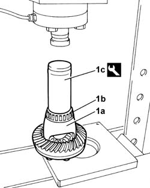
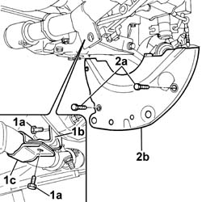

1024B54 ENGINE FLYWHEEL PROTECTION R R
- Path
- Procedures > 10 ENGINE UNIT > 1024 CRANKSHAFT AND FLYWHEEL > 1024B ENGINE FLYWHEEL > 1024B54 ENGINE FLYWHEEL PROTECTION R R
- Kind
- repair procedure (removal / refitting; the operation number is the code)
- Applies to
- engines: 1.1, 1.2 8v; all production periods
- Interactive page
- https://sloeber94.github.io/elrnDB-fPnd/en/#/2752438
Applies to: engines: 1.1; all production periods
 Removing
Removing
 Refitting
Refitting
Applies to: engines: 1.2 8v; all production periods
Removing
RefittingOp. 7055B54 UNDER-ENGINE GUARD - R R
1. Undo the fixing bolts (1a) and remove bracket (1b) and release bracket (1c).
2. Unscrew the fixing bolts (2a) and remove the engine flywheel guard (2b).

Applies to: engines: 1.2 8v; all production periods; only with equipment: 4x4
Refitting
RemovingFit the engine flywheel guard and tighten the retaining bolts.
Fit the exhaust mounting bracket and tighten the fixing bolts.
Fastening | Component | Ø | Value (daNm) | |
|---|---|---|---|---|
- | Bolt | EXHAUST PIPE MOUNTS/FASTENERS | M10 X 1.25 | 5 |
Fastening | Component | Ø | Value (daNm) | |
|---|---|---|---|---|
- | Bolt | EXHAUST PIPE MOUNTS/FASTENERS | M8 | 2.5 |